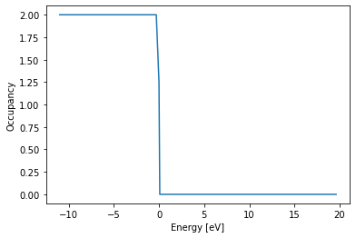

Exercise 3: Murnaghan plots using sphinx¶
from pyiron import Project
import numpy as np
import matplotlib.pylab as plt
import pandas as pd
from ast import literal_eval
Perform a static energy calculation of bulk Al using DFT (Sphinx as open source DFT code)¶
pr = Project("demo/sphinx_demo")
# pr.remove_jobs()
job_sphinx = pr.create_job(pr.job_type.Sphinx, "test_sphinx")
job_sphinx.structure = pr.create_ase_bulk("Al")
job_sphinx.set_occupancy_smearing(width=0.1)
job_sphinx.plane_wave_cutoff
340
job_sphinx.xc
'PBE'
job_sphinx.set_kpoints(mesh=[5, 5, 5])
Inspecting the input parameters¶
job_sphinx.input
Group({'sphinx': Group({'pawPot': Group([]), 'structure': Group([]), 'basis': Group({'kPoint': Group([]), 'folding': array([5, 5, 5])}), 'PAWHamiltonian': Group([]), 'initialGuess': Group([]), 'main': Group([])}), 'EnCut': 340, 'KpointCoords': [0.5, 0.5, 0.5], 'KpointFolding': [5, 5, 5], 'EmptyStates': 'auto', 'Sigma': 0.1, 'Xcorr': 'PBE', 'VaspPot': False, 'Estep': 100, 'Ediff': 0.0001, 'WriteWaves': True, 'KJxc': False, 'SaveMemory': True, 'rhoMixing': 1.0, 'spinMixing': 1.0, 'CheckOverlap': True, 'THREADS': 1})
job_sphinx.calc_static()
job_sphinx.run()
The job test_sphinx was saved and received the ID: 61
---------------------------------------------------------------------------
AssertionError Traceback (most recent call last)
<ipython-input-12-da3de2a75f2e> in <module>
----> 1 job_sphinx.run()
/usr/share/miniconda/lib/python3.8/site-packages/pyiron_base/job/generic.py in run(self, delete_existing_job, repair, debug, run_mode, run_again)
681 status = "created"
682 if status == "initialized":
--> 683 self._run_if_new(debug=debug)
684 elif status == "created":
685 que_id = self._run_if_created()
/usr/share/miniconda/lib/python3.8/site-packages/pyiron_base/job/generic.py in _run_if_new(self, debug)
1391 else:
1392 self.save()
-> 1393 self.run()
1394
1395 def _run_if_created(self):
/usr/share/miniconda/lib/python3.8/site-packages/pyiron_base/job/generic.py in run(self, delete_existing_job, repair, debug, run_mode, run_again)
683 self._run_if_new(debug=debug)
684 elif status == "created":
--> 685 que_id = self._run_if_created()
686 if que_id:
687 self._logger.info(
/usr/share/miniconda/lib/python3.8/site-packages/pyiron_base/job/generic.py in _run_if_created(self)
1408 self.run_if_manually()
1409 elif self.server.run_mode.modal:
-> 1410 self.run_static()
1411 elif self.server.run_mode.non_modal or self.server.run_mode.thread:
1412 self.run_if_non_modal()
/usr/share/miniconda/lib/python3.8/site-packages/pyiron_base/job/generic.py in run_static(self)
785 "{}, status: {}, output: {}".format(self.job_info_str, self.status, out)
786 )
--> 787 self.run()
788 if job_crashed:
789 self.status.aborted = True
/usr/share/miniconda/lib/python3.8/site-packages/pyiron_base/job/generic.py in run(self, delete_existing_job, repair, debug, run_mode, run_again)
696 self._run_if_running()
697 elif status == "collect":
--> 698 self._run_if_collect()
699 elif status == "suspend":
700 self._run_if_suspended()
/usr/share/miniconda/lib/python3.8/site-packages/pyiron_base/job/generic.py in _run_if_collect(self)
1482 status is set to 'finished'
1483 """
-> 1484 self.collect_output()
1485 self.collect_logfiles()
1486 if self.job_id is not None:
/usr/share/miniconda/lib/python3.8/site-packages/pyiron/sphinx/interactive.py in collect_output(self, force_update)
215
216 def collect_output(self, force_update=False):
--> 217 super(SphinxInteractive, self).collect_output(force_update=force_update)
218 self._output_interactive_to_generic()
219
/usr/share/miniconda/lib/python3.8/site-packages/pyiron/sphinx/base.py in collect_output(self, force_update)
1396 Collects the outputs and stores them to the hdf file
1397 """
-> 1398 self._output_parser.collect(directory=self.working_directory)
1399 self._output_parser.to_hdf(self._hdf5, force_update=force_update)
1400
/usr/share/miniconda/lib/python3.8/site-packages/pyiron/sphinx/base.py in collect(self, directory)
2347 directory (str): the directory to collect the output from.
2348 """
-> 2349 self.collect_sphinx_log(file_name="sphinx.log", cwd=directory)
2350 self.collect_energy_dat(file_name="energy.dat", cwd=directory)
2351 self.collect_residue_dat(file_name="residue.dat", cwd=directory)
/usr/share/miniconda/lib/python3.8/site-packages/pyiron/sphinx/base.py in collect_sphinx_log(self, file_name, cwd, check_consistency)
2088 if not np.any(["Enter Main Loop" in line for line in log_file]):
2089 self._job.status.aborted = True
-> 2090 raise AssertionError("SPHInX did not enter the main loop; \
2091 output not collected")
2092 if not np.any(["Program exited normally." in line
AssertionError: SPHInX did not enter the main loop; output not collected
job_sphinx.status
'finished'
Plotting the Fermi-Dirac distribution of the electronic occupancies¶
job_sphinx["output/generic/dft"]
{'groups': [], 'nodes': ['bands_e_fermi', 'bands_eigen_values', 'bands_k_weights', 'bands_occ', 'computation_time', 'electronic_entropy', 'energy_band', 'energy_free', 'energy_int', 'energy_zero', 'n_valence', 'residue', 'scf_computation_time', 'scf_convergence', 'scf_electronic_entropy', 'scf_energy_band', 'scf_energy_free', 'scf_energy_int', 'scf_energy_zero', 'scf_residue']}
len(job_sphinx["output/generic/dft/scf_energy_int"][-1])
3
# The first index is the spin (only 1 for non-magnetic calculation)
eigen_values = job_sphinx["output/generic/dft/bands_eigen_values"][-1].flatten()
args = np.argsort(eigen_values)
eigen_values = eigen_values[args]
occ = job_sphinx["output/generic/dft/bands_occ"][0].flatten()[args]
efermi = job_sphinx["output/generic/dft/bands_e_fermi"][-1]
eigen_values -= efermi
plt.plot(eigen_values, occ)
plt.xlabel("Energy [eV]")
plt.ylabel("Occupancy");

Inspecting the output¶
job_sphinx["output/generic"]
{'groups': ['dft'], 'nodes': ['cells', 'computation_time', 'energy_pot', 'energy_tot', 'forces', 'positions', 'volume']}
job_sphinx["output/generic/energy_tot"][-1]
-57.19954510906662
Plotting an E-V curve¶
pr = Project("demo/murnaghan_Al_dft")
# pr.remove_jobs()
a_range = np.linspace(3.9, 4.2, 6)
encut_list = [350]
kpoint_list = [12]
for kpt in kpoint_list:
for encut in encut_list:
for a in a_range:
job_name = "job_name_a_{:.4}_encut_{}_kpt_{}".format(a, encut, kpt).replace(".", "_")
print(job_name)
job = pr.create_job(pr.job_type.Sphinx, job_name)
job.structure = pr.create_ase_bulk("Al", a=a)
job.plane_wave_cutoff = encut
k_mesh = [kpt] * 3
job.set_kpoints(mesh=k_mesh)
job.run()
job_name_a_3_9_encut_350_kpt_12
The job job_name_a_3_9_encut_350_kpt_12 was saved and received the ID: 201
job_name_a_3_96_encut_350_kpt_12
The job job_name_a_3_96_encut_350_kpt_12 was saved and received the ID: 210
job_name_a_4_02_encut_350_kpt_12
The job job_name_a_4_02_encut_350_kpt_12 was saved and received the ID: 220
job_name_a_4_08_encut_350_kpt_12
The job job_name_a_4_08_encut_350_kpt_12 was saved and received the ID: 228
job_name_a_4_14_encut_350_kpt_12
The job job_name_a_4_14_encut_350_kpt_12 was saved and received the ID: 238
job_name_a_4_2_encut_350_kpt_12
The job job_name_a_4_2_encut_350_kpt_12 was saved and received the ID: 247
pr.job_table();
Analyzing the outputs¶
def get_volume(job):
return job["output/generic/volume"][-1]
def get_lattice_parameter(job):
return job["output/generic/cells"][-1][0, 1] * 2
def get_total_energy(job):
return job["output/generic/energy_tot"][-1]
def get_encut_kpoints(job):
str_list = job.job_name.split("_")
kpts = [str_list[-1]] * 3
encut = str_list[-3]
return encut, kpts
def get_n_scf(job):
return len(job["output/generic/dft/scf_energy_int"][-1])
def get_properties(df):
job = pr.inspect(df.id)
df["a"] = get_lattice_parameter(job)
df["e_tot"] = get_total_energy(job)
df["encut"], df["kpoints"] = get_encut_kpoints(job)
df["n_scf"] = get_n_scf(job)
return df
job["input/structure/cell/cell"][0, 1] * 2
4.2
job["output/generic/energy_tot"][-1]
-57.20282223568748
int(job.job_name.split("_")[-3]), [int(job.job_name.split("_")[-1])] * 3
(350, [12, 12, 12])
type(job)
pyiron.sphinx.sphinx.Sphinx
job["output/generic/dft"]
{'groups': [], 'nodes': ['bands_e_fermi', 'bands_eigen_values', 'bands_k_weights', 'bands_occ', 'computation_time', 'electronic_entropy', 'energy_band', 'energy_free', 'energy_int', 'energy_zero', 'n_valence', 'residue', 'scf_computation_time', 'scf_convergence', 'scf_electronic_entropy', 'scf_energy_band', 'scf_energy_free', 'scf_energy_int', 'scf_energy_zero', 'scf_residue']}
Plotting E-V curves¶
%%time
erg_lst, vol_lst = [], []
for job in pr.iter_jobs(convert_to_object=False):
erg_lst.append(get_total_energy(job))
vol_lst.append(get_volume(job))
CPU times: user 79.2 ms, sys: 11.5 ms, total: 90.6 ms
Wall time: 211 ms
erg_fit = np.poly1d(np.polyfit(vol_lst, erg_lst, 3))
vol_fit = np.linspace(np.min(vol_lst), np.max(vol_lst), 100)
plt.plot(vol_lst, erg_lst, 'x')
plt.plot(vol_fit, erg_fit(vol_fit), '--', label='fit')
plt.legend();
Using pandas for analysis¶
An alternate way to analyze these notebooks (if you are not a fan of for loops)
df = pr.job_table()
df = df[df.status=="finished"]
df;
%%time
df_result = df.apply(get_properties, axis=1)
df_result[["a", "e_tot", "encut", "kpoints", "n_scf"]]
CPU times: user 128 ms, sys: 7.98 ms, total: 136 ms
Wall time: 367 ms
| a | e_tot | encut | kpoints | n_scf | |
|---|---|---|---|---|---|
| 0 | 3.90 | -57.184040 | 350 | [12, 12, 12] | 4 |
| 1 | 3.96 | -57.222944 | 350 | [12, 12, 12] | 4 |
| 2 | 4.02 | -57.241557 | 350 | [12, 12, 12] | 3 |
| 3 | 4.08 | -57.242664 | 350 | [12, 12, 12] | 4 |
| 4 | 4.14 | -57.228889 | 350 | [12, 12, 12] | 4 |
| 5 | 4.20 | -57.202822 | 350 | [12, 12, 12] | 4 |
Use the murnaghan module to scan over different k-points and energy cutoff values as in ex_2¶
pr = Project("demo/murnaghan_dft")
###pr.remove_jobs()
encut_list = [250, 350, 450]
#kpoint_list = [4, 8, 12, 16]
kpoint_list = [4, 12]
for kpt in kpoint_list:
for encut in encut_list:
job_name = "murn_Al_encut_{}_kpt_{}".format(encut, kpt)
murn = pr.create_job(pr.job_type.Murnaghan, job_name)
job_ref = pr.create_job(pr.job_type.Sphinx, "Al_ref")
job_ref.structure = pr.create_ase_bulk("Al")
job_ref.calc_static()
job_ref.plane_wave_cutoff = encut
k_mesh = [kpt] * 3
job_ref.set_kpoints(mesh=k_mesh)
murn.ref_job = job_ref
murn.input["num_points"] = 9
murn.run()
The job murn_Al_encut_250_kpt_4 was saved and received the ID: 255
WARNING:
job.input.structure != job.structure. The current job.structure will overwrite any changes you may might have made to job.input.structure in the meantime. To disable this overwrite, set job.input.structure.read_only = True. To disable this warning, call job.load_structure_group() after making changes to job.structure.
The job strain_0_9 was saved and received the ID: 256
WARNING:
job.input.structure != job.structure. The current job.structure will overwrite any changes you may might have made to job.input.structure in the meantime. To disable this overwrite, set job.input.structure.read_only = True. To disable this warning, call job.load_structure_group() after making changes to job.structure.
The job strain_0_925 was saved and received the ID: 260
WARNING:
job.input.structure != job.structure. The current job.structure will overwrite any changes you may might have made to job.input.structure in the meantime. To disable this overwrite, set job.input.structure.read_only = True. To disable this warning, call job.load_structure_group() after making changes to job.structure.
The job strain_0_95 was saved and received the ID: 263
WARNING:
job.input.structure != job.structure. The current job.structure will overwrite any changes you may might have made to job.input.structure in the meantime. To disable this overwrite, set job.input.structure.read_only = True. To disable this warning, call job.load_structure_group() after making changes to job.structure.
The job strain_0_975 was saved and received the ID: 266
WARNING:
job.input.structure != job.structure. The current job.structure will overwrite any changes you may might have made to job.input.structure in the meantime. To disable this overwrite, set job.input.structure.read_only = True. To disable this warning, call job.load_structure_group() after making changes to job.structure.
The job strain_1_0 was saved and received the ID: 271
WARNING:
job.input.structure != job.structure. The current job.structure will overwrite any changes you may might have made to job.input.structure in the meantime. To disable this overwrite, set job.input.structure.read_only = True. To disable this warning, call job.load_structure_group() after making changes to job.structure.
The job strain_1_025 was saved and received the ID: 274
WARNING:
job.input.structure != job.structure. The current job.structure will overwrite any changes you may might have made to job.input.structure in the meantime. To disable this overwrite, set job.input.structure.read_only = True. To disable this warning, call job.load_structure_group() after making changes to job.structure.
The job strain_1_05 was saved and received the ID: 278
WARNING:
job.input.structure != job.structure. The current job.structure will overwrite any changes you may might have made to job.input.structure in the meantime. To disable this overwrite, set job.input.structure.read_only = True. To disable this warning, call job.load_structure_group() after making changes to job.structure.
The job strain_1_075 was saved and received the ID: 281
WARNING:
job.input.structure != job.structure. The current job.structure will overwrite any changes you may might have made to job.input.structure in the meantime. To disable this overwrite, set job.input.structure.read_only = True. To disable this warning, call job.load_structure_group() after making changes to job.structure.
The job strain_1_1 was saved and received the ID: 284
job_id: 256 finished
job_id: 260 finished
job_id: 263 finished
job_id: 266 finished
job_id: 271 finished
job_id: 274 finished
job_id: 278 finished
job_id: 281 finished
job_id: 284 finished
The job murn_Al_encut_350_kpt_4 was saved and received the ID: 288
WARNING:
job.input.structure != job.structure. The current job.structure will overwrite any changes you may might have made to job.input.structure in the meantime. To disable this overwrite, set job.input.structure.read_only = True. To disable this warning, call job.load_structure_group() after making changes to job.structure.
The job strain_0_9 was saved and received the ID: 290
WARNING:
job.input.structure != job.structure. The current job.structure will overwrite any changes you may might have made to job.input.structure in the meantime. To disable this overwrite, set job.input.structure.read_only = True. To disable this warning, call job.load_structure_group() after making changes to job.structure.
The job strain_0_925 was saved and received the ID: 293
WARNING:
job.input.structure != job.structure. The current job.structure will overwrite any changes you may might have made to job.input.structure in the meantime. To disable this overwrite, set job.input.structure.read_only = True. To disable this warning, call job.load_structure_group() after making changes to job.structure.
The job strain_0_95 was saved and received the ID: 297
WARNING:
job.input.structure != job.structure. The current job.structure will overwrite any changes you may might have made to job.input.structure in the meantime. To disable this overwrite, set job.input.structure.read_only = True. To disable this warning, call job.load_structure_group() after making changes to job.structure.
The job strain_0_975 was saved and received the ID: 301
WARNING:
job.input.structure != job.structure. The current job.structure will overwrite any changes you may might have made to job.input.structure in the meantime. To disable this overwrite, set job.input.structure.read_only = True. To disable this warning, call job.load_structure_group() after making changes to job.structure.
The job strain_1_0 was saved and received the ID: 305
WARNING:
job.input.structure != job.structure. The current job.structure will overwrite any changes you may might have made to job.input.structure in the meantime. To disable this overwrite, set job.input.structure.read_only = True. To disable this warning, call job.load_structure_group() after making changes to job.structure.
The job strain_1_025 was saved and received the ID: 308
WARNING:
job.input.structure != job.structure. The current job.structure will overwrite any changes you may might have made to job.input.structure in the meantime. To disable this overwrite, set job.input.structure.read_only = True. To disable this warning, call job.load_structure_group() after making changes to job.structure.
The job strain_1_05 was saved and received the ID: 311
WARNING:
job.input.structure != job.structure. The current job.structure will overwrite any changes you may might have made to job.input.structure in the meantime. To disable this overwrite, set job.input.structure.read_only = True. To disable this warning, call job.load_structure_group() after making changes to job.structure.
The job strain_1_075 was saved and received the ID: 315
WARNING:
job.input.structure != job.structure. The current job.structure will overwrite any changes you may might have made to job.input.structure in the meantime. To disable this overwrite, set job.input.structure.read_only = True. To disable this warning, call job.load_structure_group() after making changes to job.structure.
The job strain_1_1 was saved and received the ID: 318
job_id: 290 finished
job_id: 293 finished
job_id: 297 finished
job_id: 301 finished
job_id: 305 finished
job_id: 308 finished
job_id: 311 finished
job_id: 315 finished
job_id: 318 finished
The job murn_Al_encut_450_kpt_4 was saved and received the ID: 322
WARNING:
job.input.structure != job.structure. The current job.structure will overwrite any changes you may might have made to job.input.structure in the meantime. To disable this overwrite, set job.input.structure.read_only = True. To disable this warning, call job.load_structure_group() after making changes to job.structure.
The job strain_0_9 was saved and received the ID: 323
WARNING:
job.input.structure != job.structure. The current job.structure will overwrite any changes you may might have made to job.input.structure in the meantime. To disable this overwrite, set job.input.structure.read_only = True. To disable this warning, call job.load_structure_group() after making changes to job.structure.
The job strain_0_925 was saved and received the ID: 326
WARNING:
job.input.structure != job.structure. The current job.structure will overwrite any changes you may might have made to job.input.structure in the meantime. To disable this overwrite, set job.input.structure.read_only = True. To disable this warning, call job.load_structure_group() after making changes to job.structure.
The job strain_0_95 was saved and received the ID: 329
WARNING:
job.input.structure != job.structure. The current job.structure will overwrite any changes you may might have made to job.input.structure in the meantime. To disable this overwrite, set job.input.structure.read_only = True. To disable this warning, call job.load_structure_group() after making changes to job.structure.
The job strain_0_975 was saved and received the ID: 332
WARNING:
job.input.structure != job.structure. The current job.structure will overwrite any changes you may might have made to job.input.structure in the meantime. To disable this overwrite, set job.input.structure.read_only = True. To disable this warning, call job.load_structure_group() after making changes to job.structure.
The job strain_1_0 was saved and received the ID: 335
WARNING:
job.input.structure != job.structure. The current job.structure will overwrite any changes you may might have made to job.input.structure in the meantime. To disable this overwrite, set job.input.structure.read_only = True. To disable this warning, call job.load_structure_group() after making changes to job.structure.
The job strain_1_025 was saved and received the ID: 337
WARNING:
job.input.structure != job.structure. The current job.structure will overwrite any changes you may might have made to job.input.structure in the meantime. To disable this overwrite, set job.input.structure.read_only = True. To disable this warning, call job.load_structure_group() after making changes to job.structure.
The job strain_1_05 was saved and received the ID: 341
WARNING:
job.input.structure != job.structure. The current job.structure will overwrite any changes you may might have made to job.input.structure in the meantime. To disable this overwrite, set job.input.structure.read_only = True. To disable this warning, call job.load_structure_group() after making changes to job.structure.
The job strain_1_075 was saved and received the ID: 345
WARNING:
job.input.structure != job.structure. The current job.structure will overwrite any changes you may might have made to job.input.structure in the meantime. To disable this overwrite, set job.input.structure.read_only = True. To disable this warning, call job.load_structure_group() after making changes to job.structure.
The job strain_1_1 was saved and received the ID: 349
job_id: 323 finished
job_id: 326 finished
job_id: 329 finished
job_id: 332 finished
job_id: 335 finished
job_id: 337 finished
job_id: 341 finished
job_id: 345 finished
job_id: 349 finished
The job murn_Al_encut_250_kpt_12 was saved and received the ID: 352
WARNING:
job.input.structure != job.structure. The current job.structure will overwrite any changes you may might have made to job.input.structure in the meantime. To disable this overwrite, set job.input.structure.read_only = True. To disable this warning, call job.load_structure_group() after making changes to job.structure.
The job strain_0_9 was saved and received the ID: 354
WARNING:
job.input.structure != job.structure. The current job.structure will overwrite any changes you may might have made to job.input.structure in the meantime. To disable this overwrite, set job.input.structure.read_only = True. To disable this warning, call job.load_structure_group() after making changes to job.structure.
The job strain_0_925 was saved and received the ID: 360
WARNING:
job.input.structure != job.structure. The current job.structure will overwrite any changes you may might have made to job.input.structure in the meantime. To disable this overwrite, set job.input.structure.read_only = True. To disable this warning, call job.load_structure_group() after making changes to job.structure.
The job strain_0_95 was saved and received the ID: 365
WARNING:
job.input.structure != job.structure. The current job.structure will overwrite any changes you may might have made to job.input.structure in the meantime. To disable this overwrite, set job.input.structure.read_only = True. To disable this warning, call job.load_structure_group() after making changes to job.structure.
The job strain_0_975 was saved and received the ID: 370
WARNING:
job.input.structure != job.structure. The current job.structure will overwrite any changes you may might have made to job.input.structure in the meantime. To disable this overwrite, set job.input.structure.read_only = True. To disable this warning, call job.load_structure_group() after making changes to job.structure.
The job strain_1_0 was saved and received the ID: 371
WARNING:
job.input.structure != job.structure. The current job.structure will overwrite any changes you may might have made to job.input.structure in the meantime. To disable this overwrite, set job.input.structure.read_only = True. To disable this warning, call job.load_structure_group() after making changes to job.structure.
The job strain_1_025 was saved and received the ID: 372
WARNING:
job.input.structure != job.structure. The current job.structure will overwrite any changes you may might have made to job.input.structure in the meantime. To disable this overwrite, set job.input.structure.read_only = True. To disable this warning, call job.load_structure_group() after making changes to job.structure.
The job strain_1_05 was saved and received the ID: 373
WARNING:
job.input.structure != job.structure. The current job.structure will overwrite any changes you may might have made to job.input.structure in the meantime. To disable this overwrite, set job.input.structure.read_only = True. To disable this warning, call job.load_structure_group() after making changes to job.structure.
The job strain_1_075 was saved and received the ID: 374
WARNING:
job.input.structure != job.structure. The current job.structure will overwrite any changes you may might have made to job.input.structure in the meantime. To disable this overwrite, set job.input.structure.read_only = True. To disable this warning, call job.load_structure_group() after making changes to job.structure.
The job strain_1_1 was saved and received the ID: 375
job_id: 354 finished
job_id: 360 finished
job_id: 365 finished
job_id: 370 finished
job_id: 371 finished
job_id: 372 finished
job_id: 373 finished
job_id: 374 finished
job_id: 375 finished
The job murn_Al_encut_350_kpt_12 was saved and received the ID: 376
WARNING:
job.input.structure != job.structure. The current job.structure will overwrite any changes you may might have made to job.input.structure in the meantime. To disable this overwrite, set job.input.structure.read_only = True. To disable this warning, call job.load_structure_group() after making changes to job.structure.
The job strain_0_9 was saved and received the ID: 377
WARNING:
job.input.structure != job.structure. The current job.structure will overwrite any changes you may might have made to job.input.structure in the meantime. To disable this overwrite, set job.input.structure.read_only = True. To disable this warning, call job.load_structure_group() after making changes to job.structure.
The job strain_0_925 was saved and received the ID: 378
WARNING:
job.input.structure != job.structure. The current job.structure will overwrite any changes you may might have made to job.input.structure in the meantime. To disable this overwrite, set job.input.structure.read_only = True. To disable this warning, call job.load_structure_group() after making changes to job.structure.
The job strain_0_95 was saved and received the ID: 379
WARNING:
job.input.structure != job.structure. The current job.structure will overwrite any changes you may might have made to job.input.structure in the meantime. To disable this overwrite, set job.input.structure.read_only = True. To disable this warning, call job.load_structure_group() after making changes to job.structure.
The job strain_0_975 was saved and received the ID: 380
WARNING:
job.input.structure != job.structure. The current job.structure will overwrite any changes you may might have made to job.input.structure in the meantime. To disable this overwrite, set job.input.structure.read_only = True. To disable this warning, call job.load_structure_group() after making changes to job.structure.
The job strain_1_0 was saved and received the ID: 381
WARNING:
job.input.structure != job.structure. The current job.structure will overwrite any changes you may might have made to job.input.structure in the meantime. To disable this overwrite, set job.input.structure.read_only = True. To disable this warning, call job.load_structure_group() after making changes to job.structure.
The job strain_1_025 was saved and received the ID: 382
WARNING:
job.input.structure != job.structure. The current job.structure will overwrite any changes you may might have made to job.input.structure in the meantime. To disable this overwrite, set job.input.structure.read_only = True. To disable this warning, call job.load_structure_group() after making changes to job.structure.
The job strain_1_05 was saved and received the ID: 383
WARNING:
job.input.structure != job.structure. The current job.structure will overwrite any changes you may might have made to job.input.structure in the meantime. To disable this overwrite, set job.input.structure.read_only = True. To disable this warning, call job.load_structure_group() after making changes to job.structure.
The job strain_1_075 was saved and received the ID: 384
WARNING:
job.input.structure != job.structure. The current job.structure will overwrite any changes you may might have made to job.input.structure in the meantime. To disable this overwrite, set job.input.structure.read_only = True. To disable this warning, call job.load_structure_group() after making changes to job.structure.
The job strain_1_1 was saved and received the ID: 385
job_id: 377 finished
job_id: 378 finished
job_id: 379 finished
job_id: 380 finished
job_id: 381 finished
job_id: 382 finished
job_id: 383 finished
job_id: 384 finished
job_id: 385 finished
The job murn_Al_encut_450_kpt_12 was saved and received the ID: 386
WARNING:
job.input.structure != job.structure. The current job.structure will overwrite any changes you may might have made to job.input.structure in the meantime. To disable this overwrite, set job.input.structure.read_only = True. To disable this warning, call job.load_structure_group() after making changes to job.structure.
The job strain_0_9 was saved and received the ID: 387
WARNING:
job.input.structure != job.structure. The current job.structure will overwrite any changes you may might have made to job.input.structure in the meantime. To disable this overwrite, set job.input.structure.read_only = True. To disable this warning, call job.load_structure_group() after making changes to job.structure.
The job strain_0_925 was saved and received the ID: 388
WARNING:
job.input.structure != job.structure. The current job.structure will overwrite any changes you may might have made to job.input.structure in the meantime. To disable this overwrite, set job.input.structure.read_only = True. To disable this warning, call job.load_structure_group() after making changes to job.structure.
The job strain_0_95 was saved and received the ID: 389
WARNING:
job.input.structure != job.structure. The current job.structure will overwrite any changes you may might have made to job.input.structure in the meantime. To disable this overwrite, set job.input.structure.read_only = True. To disable this warning, call job.load_structure_group() after making changes to job.structure.
The job strain_0_975 was saved and received the ID: 390
WARNING:
job.input.structure != job.structure. The current job.structure will overwrite any changes you may might have made to job.input.structure in the meantime. To disable this overwrite, set job.input.structure.read_only = True. To disable this warning, call job.load_structure_group() after making changes to job.structure.
The job strain_1_0 was saved and received the ID: 391
WARNING:
job.input.structure != job.structure. The current job.structure will overwrite any changes you may might have made to job.input.structure in the meantime. To disable this overwrite, set job.input.structure.read_only = True. To disable this warning, call job.load_structure_group() after making changes to job.structure.
The job strain_1_025 was saved and received the ID: 392
WARNING:
job.input.structure != job.structure. The current job.structure will overwrite any changes you may might have made to job.input.structure in the meantime. To disable this overwrite, set job.input.structure.read_only = True. To disable this warning, call job.load_structure_group() after making changes to job.structure.
The job strain_1_05 was saved and received the ID: 393
WARNING:
job.input.structure != job.structure. The current job.structure will overwrite any changes you may might have made to job.input.structure in the meantime. To disable this overwrite, set job.input.structure.read_only = True. To disable this warning, call job.load_structure_group() after making changes to job.structure.
The job strain_1_075 was saved and received the ID: 394
WARNING:
job.input.structure != job.structure. The current job.structure will overwrite any changes you may might have made to job.input.structure in the meantime. To disable this overwrite, set job.input.structure.read_only = True. To disable this warning, call job.load_structure_group() after making changes to job.structure.
The job strain_1_1 was saved and received the ID: 395
job_id: 387 finished
job_id: 388 finished
job_id: 389 finished
job_id: 390 finished
job_id: 391 finished
job_id: 392 finished
job_id: 393 finished
job_id: 394 finished
job_id: 395 finished
Using pyiron tables¶
from pyiron.table.datamining import PyironTable
pt = PyironTable(pr, "murn_table_dft")
murn["output/structure/cell/cell"][0, 1] * 2
4.052850088952362
def get_lattice_parameter(job):
return job["output/structure/cell/cell"][0, 1] * 2
def get_eq_energy(job):
return job["output/equilibrium_energy"]
def get_bm(job):
return job["output/equilibrium_bulk_modulus"]
def get_encut(job):
return get_encut_kpoints(job)[0]
def get_kpoints(job):
return get_encut_kpoints(job)[1]
def get_cohesive_energy(job):
e_bulk = get_eq_energy(job)
encut_str= get_encut(job)
encut = int(encut_str)
atom_job_name = "aj_encut_{}".format(encut_str)
df = pr.job_table()
if not atom_job_name in df[df.status=="finished"].job.to_list():
atom_job = pr.create_job(pr.job_type.Sphinx, atom_job_name)
el = job["output/structure/species"][0]
atom_job.structure = pr.create_atoms(el, cell=np.eye(3)* 10, scaled_positions=[[0.5, 0.5, 0.5]])
atom_job.plane_wave_cutoff = encut
# Using only the Gamma point
atom_job.set_kpoints(mesh=[1, 1, 1])
atom_job.calc_static()
atom_job.run()
e_atom = pr.inspect(atom_job_name)["output/generic/energy_tot"][-1]
return e_bulk - e_atom
def filter_function(job):
return (job.status == "finished") & ("murn" in job.job_name)
pt.filter_function = filter_function
pt.add["a_eq"] = get_lattice_parameter
pt.add["bulk_modulus"] = get_bm
pt.add["encut"] = get_encut
pt.add["kpoints"] = get_kpoints
pt.add["e_coh"] = get_cohesive_energy
pt.convert_to_object = False
pt.create_table()
100%|██████████| 60/60 [00:00<00:00, 1133.62it/s]
0%| | 0/6 [00:00<?, ?it/s]
The job aj_encut_250 was saved and received the ID: 396
17%|█▋ | 1/6 [00:12<01:01, 12.32s/it]
The job aj_encut_350 was saved and received the ID: 397
33%|███▎ | 2/6 [00:30<00:55, 13.98s/it]
The job aj_encut_450 was saved and received the ID: 398
100%|██████████| 6/6 [00:53<00:00, 8.96s/it]
df = pt.get_dataframe().drop(["col_0", "col_1", "col_2"], axis=1)
df
| job_id | a_eq | bulk_modulus | encut | kpoints | e_coh | |
|---|---|---|---|---|---|---|
| 0 | 255 | 4.062126 | 81.203234 | 250 | [4, 4, 4] | -3.612128 |
| 1 | 288 | 4.057718 | 82.415304 | 350 | [4, 4, 4] | -3.621299 |
| 2 | 322 | 4.056997 | 81.890404 | 450 | [4, 4, 4] | -3.623744 |
| 3 | 352 | 4.058432 | 78.725017 | 250 | [12, 12, 12] | -3.667680 |
| 4 | 376 | 4.053631 | 79.844466 | 350 | [12, 12, 12] | -3.676872 |
| 5 | 386 | 4.052850 | 79.383996 | 450 | [12, 12, 12] | -3.679358 |